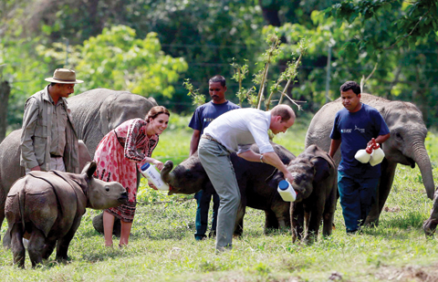

Kaziranga National Park
Kaziranga National Park is situated in the Golaghat and Nagaon districts of Assam. The national park is famous for the rhino populations, and according to the latest census conducted by the Forest Department of Assam, there are more than 2401 rhinos living in this forest area. If you recall the historical facts then you will get to know about the royal significance of this national park in India. Once Mary Curzon, the wife of Lord Curzon visited in this place with her husband and she suddenly identified a rhino in this forest. She requested her husband to protect this place and to stop animal hunting in this national park. Afterward, Lord Curzon protected this place and declared this forest area as a reserved forest in 1916. The Kaziranga National Forest was enlisted as a UNESCO World Heritage Site in the year 1985. Along with some rhinos, you can also find some rare and migratory birds in Kaziranga National Park, like, Asian openbill stork, black bellied tern, delmatian pelican, greater spotted, eastern imperial and lots more. According to etymology, the Kaziranga name was derived from an incident, which happened in nearby villages. Kazi was a boy and Ranga was a girl who lived in the nearby villages and they fell in love, but the society did not accept their gesture. Afterward, they disappeared in the forest area and never came out of this forest. So the forest was named as Kaziranga as a symbol of their love. So there are multiple myths surrounding this forest.
Manas Wildlife Sanctuary Assam
Manas Wildlife Sanctuary Assam was added as a UNESCO World Heritage Site in the year 1985. This wildlife sanctuary is located on the Himalayan foothills and in this sanctuary, you can find the largest tiger reserve, elephant reserve and biosphere reservation projects in Assam. This national park is extended toward Bhutan, and the part in Bhutan is known as the Royal Manas National Park. You can see some endangered animals including Assam roofed turtle, golden langur and pygmy hog in this park. The name of this national park originated from Manas River which is a part of the Brahmaputra River. The Manas National Park was declared as a sanctuary in 1928 and in 1973, Manas Bio-Reserve was created inside the part premises. You can find more than fifty five species of mammals in this park, including Indian elephants, gauers, golden langurs, slow loris, hoolock gibbons, sloth bears and barking bears. So now if you want to explore some rare species and mammals then you can visit the Manas National Park for your next vacation. Further Reading about Manas National Park